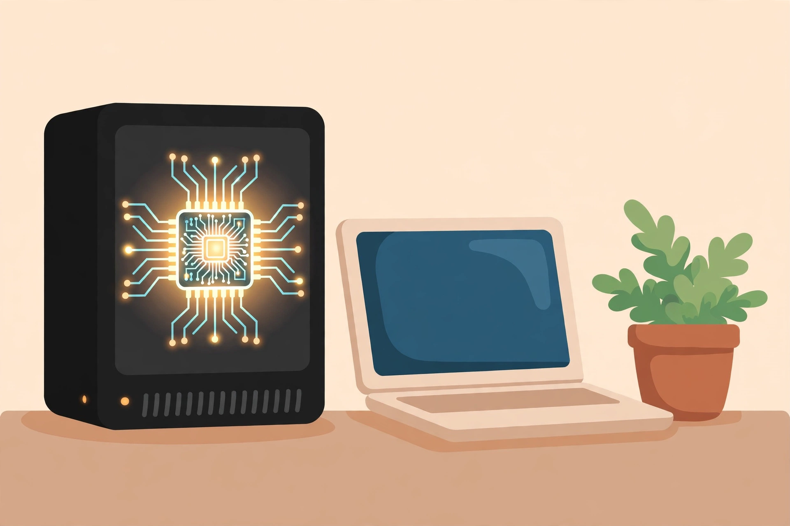

2026년 11월 6일

서버를 직접 구축하지 않고도 AI를 쓸 수 있는 일체형 제품이 나왔습니다. 에이전틱 AI 스타트업 포티투마루가 11월 5일 '어플라이언스42'를 출시한다고 밝혔습니다. GPU·NPU·LPU 같은 AI용 하드웨어에 자사 AI 솔루션을 합쳐, 상자 하나만 두면 바로 쓸 수 있게 만든 제품입니다.
기본은 사내망에 직접 설치해 쓰는 자체 구축형이고, 장비가 부담스러운 곳은 클라우드 GPU를 빌려 쓰는 방식도 고를 수 있습니다. 그동안 AI 도입은 대기업과 중앙부처가 중심이었는데, 이제 중소기업과 소상공인, 지자체 같은 작은 현장으로 넓어지는 흐름에 맞춘 제품입니다.
눈에 띄는 건 앞으로의 방향입니다. 포티투마루는 소기업과 소상공인을 거쳐, 개인용 '퍼스널 에이전틱 AI' 시장까지 넓히겠다는 계획입니다. 초소형 고성능 AI 장비를 개인 비서처럼 쓰는 시대가 온다면, 이런 일체형 제품이 그 시작점이 될 수도 있겠습니다.